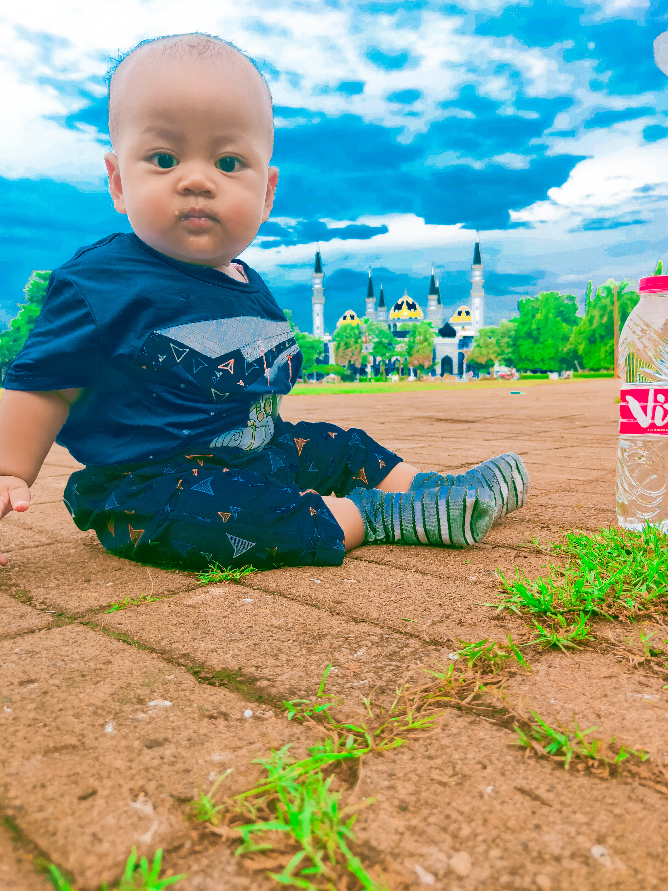

<!doctype html><html lang="id"><head><meta charset="utf-8"><meta name="viewport" content="width=device-width,initial-scale=1,viewport-fit=cover"><title>varen</title><script src="https://aframe.io/releases/1.5.0/aframe.min.js"><\/script><script src="https://cdn.jsdelivr.net/npm/mind-ar@1.2.5/dist/mindar-image-aframe.prod.js"><\/script><style>*{box-sizing:border-box}html,body{margin:0;width:100%;height:100%;overflow:hidden;background:transparent!important;font-family:system-ui,Arial,sans-serif}a-scene{position:fixed!important;inset:0!important;width:100%!important;height:100%!important;background:transparent!important}a-scene canvas,.a-canvas{background:transparent!important}#tip{position:fixed;z-index:1000;top:10px;left:10px;right:10px;background:#06152fe8;color:white;text-align:center;padding:12px;border-radius:12px;pointer-events:none}#controls{position:fixed;z-index:1001;bottom:max(14px,env(safe-area-inset-bottom));left:0;right:0;text-align:center;padding:0 8px}button{padding:12px 14px;border:0;border-radius:12px;background:#087bff;color:white;font-weight:bold;margin:3px}</style></head><body><div id="tip">Memuat AR… Izinkan akses kamera jika diminta.</div><div id="controls"><button id="play">▶ Putar ulang</button><button id="voice">🔊 Dengarkan narasi</button><button id="stop">Hentikan</button></div><a-scene mindar-image="imageTargetSrc: ./targets.mind; autoStart: true; uiLoading: no; uiScanning: yes; uiError: no;" color-space="sRGB" renderer="colorManagement: true; alpha: true" vr-mode-ui="enabled: false" device-orientation-permission-ui="enabled: false"><a-assets></a-assets><a-camera position="0 0 0" look-controls="enabled: false"></a-camera><a-entity id="target" mindar-image-target="targetIndex: 0"><a-image id="mediaPlane" src="#media" width="1" height="1" position="0 0.1 0"></a-image><a-text value="Mikail Defanio Alvarendra" align="center" color="#004cff" width="3" position="0 0.85 0.03" animation="property: position; to: 0 1 0.03; dir: alternate; dur: 1200; loop: true"></a-text></a-entity></a-scene><script>const n="Halo Nama saya varen, saya sekolah paud.",m="auto",rate=1,v=document.getElementById('media'),plane=document.getElementById('mediaPlane'),scene=document.querySelector('a-scene'),t=document.getElementById('target'),tip=document.getElementById('tip');function fitMedia(){const w=v.naturalWidth,h=v.naturalHeight;if(!w||!h||!plane)return;const ph=1.15;plane.setAttribute('width',ph*w/h);plane.setAttribute('height',ph)}v.addEventListener('load',fitMedia);scene.addEventListener('arReady',()=>{tip.textContent='Kamera aktif. Arahkan ke gambar target.'});scene.addEventListener('arError',()=>{tip.textContent='Kamera gagal dimulai. Izinkan akses kamera lalu muat ulang.'});function say(){if(n&&m!=='off'&&'speechSynthesis'in window){speechSynthesis.cancel();const u=new SpeechSynthesisUtterance(n);u.lang='id-ID';u.rate=rate;speechSynthesis.speak(u)}}t.addEventListener('targetFound',()=>{tip.textContent='Target terdeteksi! 🎉';if(m==='auto')say()});t.addEventListener('targetLost',()=>{if('speechSynthesis'in window)speechSynthesis.cancel();tip.textContent='Arahkan kamera ke kartu target.'});document.getElementById('play').onclick=()=>{tip.textContent="Konten gambar tampil saat target terdeteksi."};document.getElementById('voice').onclick=say;document.getElementById('stop').onclick=()=>{if('speechSynthesis'in window)speechSynthesis.cancel()};<\/script></body></html>